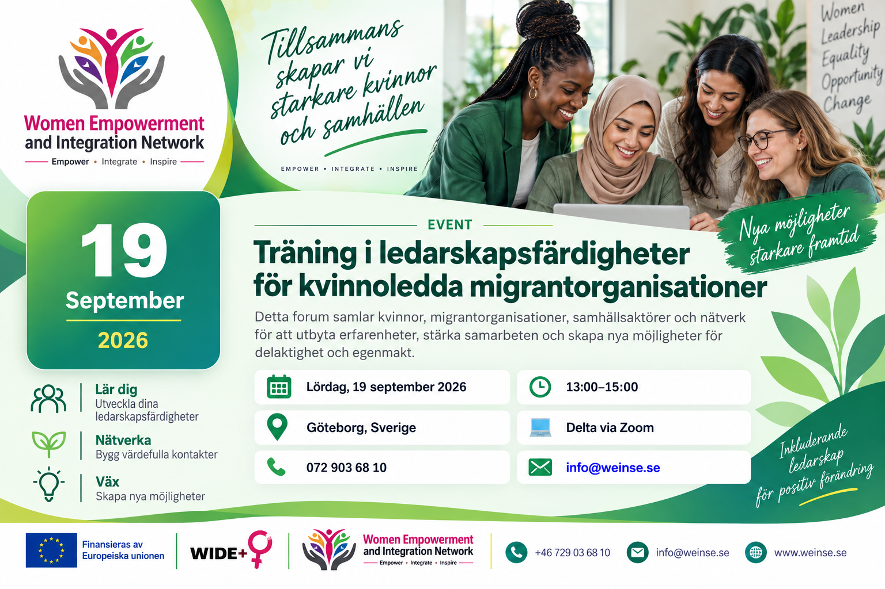

Vi samlar kvinnor, migrantorganisationer, samhällsaktörer och nätverk för kontakt, samarbete och egenmakt.

Forumet och nätverket för migrantkvinnors organisationer samlar kvinnor, migrantorganisationer, samhällsaktörer och nätverk i Göteborg.
Forumet ger möjlighet att mötas, utbyta erfarenheter, bygga relationer och utforska möjligheter till starkare samarbete.
Genom dialog och nätverkande vill WEINSE stärka kontakterna mellan organisationer och stödja ökad delaktighet och egenmakt för migrantkvinnor.
Starka nätverk kan hjälpa organisationer att utbyta kunskap, utveckla partnerskap och skapa nya möjligheter för kvinnor och deras samhällen.
Forumet skapar utrymme för meningsfulla samtal och starkare nätverk.
Skapa kontakt med kvinnor, organisationer, samhällsaktörer och andra nätverk.
Dela erfarenheter, perspektiv, idéer och lärdomar från olika organisationer och samhällen.
Utforska möjligheter till partnerskap, gemensamma initiativ och starkare organisatoriskt samarbete.
Diskutera arbetssätt som stärker kvinnors självförtroende, delaktighet och möjligheter.
Utbyt perspektiv på delaktighet, inkludering och integration av migrantkvinnor i samhället.
Utveckla långsiktiga relationer mellan migrantorganisationer och andra samhällsaktörer.
Forumet är avsett att samla personer och organisationer som är intresserade av kvinnors egenmakt, migration, integration och samhällsutveckling.
Kontakta WEINSE för mer information om Forum och nätverk för migrantkvinnors organisationer.
Kontakta WEINSE